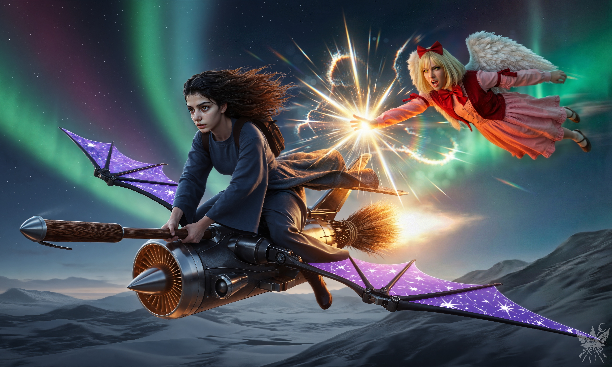
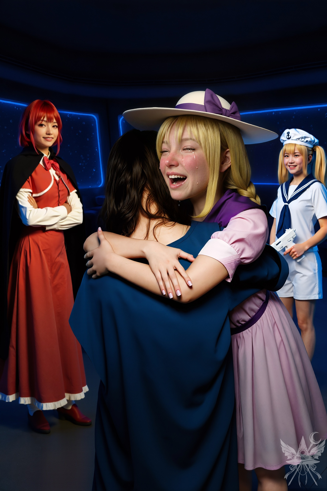

薄暗い油ランプの光が、氷雪の壁に頼りなく揺れている。茜色に染まりゆく外の景色とは対照的に、イグルーの内部には骨の髄まで凍りつくような冷気が淀んでいた。
（くそっ……！ まんまと嵌められたわね）
底冷えする檻の中で、静かに毒づく。
「ふーん、少しは頭が回るみたいじゃない」
鉄格子の向こう側で、圧倒的な捕食者の気配が嗤った。
「あのバカも、てめぇも、アタシに指一本触れられないって分かったかしら？ アタシのこと、幻月って呼んでちょうだい」
（幻月……。とんでもない化け物ね）
背筋を這い上がる悪寒を無理やり押さえ込み、声の震えを隠して口を開く。
「ええ、幻月さんが強いのは十分に理解しています。私、飛べませんし逃げようがありませんから。……檻から出していただけませんか？」
「はははっ、期待外れもいいとこね！ 強力な魔女かと思えば、ただの迷子かよ。……まあ、いいけどさ」
幻月が床のバルブを無造作に回すと、重厚な鉄格子が軋みを上げて床下へと沈んでいった。
「で、話してみな」
「儀式を間違えて、うっかり地獄に行ってしまったんです。そこで、キクリ様という創造主が幻視の中に現れて……」
言葉を紡ぐ傍ら、相手の微細な反応を窺う。案の定、幻月の纏う空気が一変し、邪悪な気配がさらに濃密になった。
「キクリ……？ で、その後どうしたのよ？」
「キクリ様は浮き彫りに封印されていて、私がそれを解放できると。その封印を解く力が魔界に隠されているから、ここに来たんです」
「へぇ！ で、なんでキクリを解放したいわけ？ 英雄気取り？ それとも、何か裏があるんじゃないの？」
「正直に言うと、解放の暁には報酬をくれると約束してもらったんです」
幻月は面白そうに手を叩いた。
「なるほど、てめぇは報酬目当ての傭兵ってわけね。それなら分かりやすいわ。で、その『力』ってのは、魔界のどこに隠されてるの？ 具体的に教えな」
（……本当に不快な尋問だわ）
内心の舌打ちを隠し、神妙な顔を作る。
「具体的にはわからないんですが……キクリ様が魔力の源を感じ取る力をくれたので、何となくはわかるんです。宝石に隠されているらしくて」
「何となく分かる……？ じゃあ、その場所まで案内しな、魔女。……ああ、そうだった。てめぇは魔女じゃなくて迷子だったわね。まあいいわ。とにかく、その力の源を見つけるまで、一歩でもアタシから離れたら塵にしてやるから」
イグルーの外へ出ると、極寒の風が容赦なく体温を奪いにきた。ユキとマイの気配はとうに消え失せている。
（あの二人、幻月を恐れて逃げたのかしら……。いや、考えるのは後よ。まずは町まで行ってエリスと合流するか、あるいはあの宇宙船の場所まで……）
頭の中で生存ルートを弾き出しながら、深い雪に足を取られつつ歩みを進める。幻月は一切の足音を立てず、ただ圧倒的な威圧感だけを背後に漂わせながら浮遊してついてくる。
一時間ほど果てしない銀世界を歩き続けた頃、不意に背後の気配が目の前に立ち塞がった。
「おい人間、てめぇ本当に分かってんのか？ どこに行きたいのよ！」
「ええ、堕ちたる神殿です。宝石は、あそこにあるような気がして……」
平静を装って答える。
「嘘つけ！ あそこには何もないわ！ いい加減うんざりよ、この弱虫！ さっさと本当のこと言え！ 殺すわよ！」
「神殿に近づくにつれて、宝石の気配が強くなっていくんです。嘘をつく理由なんて……ありません」
「それも嘘ね！ 覚悟しな！」
冷酷な笑みと共に、空気が爆発的に膨張した。
咄嗟に魔法の盾を展開し、ポケットから卵型のアーティファクトを取り出す。瞬時に実体化したスノーレーサーに飛び乗り、操縦桿を限界まで引いた。

木製の柄から伝わる、ジェットエンジンの荒々しい振動と轟音。氷点下の冷たい暴風が肌を切り裂くように吹き付ける中、背後からは肌を焦がすような猛烈な熱波が迫り来る。黄色とオレンジ色の魔力が夜空で花火のように炸裂し、極寒の空気と魔法の超高温が混じり合って、ヒリヒリとした異常な空間を作り出していた。
凄まじい風圧に息を奪われそうになりながらも、機体を右へ左へと強引に捻り、降り注ぐ閃光を間一髪で躱し続ける。
「メデたん、見て！」
頭上からオレンジの叫び声が響き、同時に黄色の弾幕を相殺する火線が走った。彼女が展開した防御シールドが、冷たい風を僅かに和らげる。
オレンジの指差す先、猛吹雪の向こう側から、見覚えのある巨大な金属の塊がジグザグに飛行しながら急接近してくる。
「メデたん、あの円盤、着陸できないの！ 自分で飛んで！ オレンジじゃメデたんを運べないの！」
オレンジの魔力に背中を押され、機体がさらに加速する。
宇宙船の下部ハッチが開き始めた。しかし、幻月が放った巨大な光の球体が、まるで意思を持っているかのように執拗にまとわりついてくる。
（ちっ……！）
片手で操縦桿を握りしめ、もう一方の手でポケットから透明化のポーションを引き抜き、一気に喉へ流し込んだ。
直後、追尾してきた光の球体が虚空を切り裂き、目標を見失って後方で虚しく爆発した。
その隙を突き、全速力で宇宙船の真下へと滑り込む。ハッチの縁に手をかけ、冷たい金属の床へと勢いよく転がり込んだ。
エアロックが閉鎖され、機密空間特有の低い駆動音が耳を打つ。
「メデたんが撃たれちゃったの！ 粉々になって、跡形もなくなっちゃったみたい……！」
オレンジが膝から崩れ落ち、子供のように泣きじゃくる声が響いた。
近づいてきたちゆりが優しく肩を叩き、夢美が深くため息をつく気配がする。
「ごめんなさいね、メデアさん。間に合わなかったわ……」
「ここにいるわよ」
「メデたん、どこー！？」
涙目で周囲を見回すオレンジに、少し意地悪な笑みを向ける。
「私は幽霊よ。あなたたちの罪を罰しに来たんだから」
「ひゃーっ！」
と悲鳴を上げて後ずさりするオレンジ。夢美とちゆりが顔を見合わせ、吹き出した。
「夢美様、幽霊って水に弱いんだっけ？」
ちゆりが手にしたブラスターから容赦なく水流を浴びせてくる。
「冗談よ、冗談」
濡れたローブを払いながら苦笑する。
「よかったぁ〜！ メデたん、生きてたんだー！」

無機質な青白いLEDライトが照らす、ひんやりとした金属の空間。電子機器の低いハム音が響く密室の中で、そこだけが異常なほどの熱を帯びていた。大粒の涙がローブの肩口を濡らし、首に回された腕から、力強くて温かい体温が直接伝わってくる。むせび泣くような感情の爆発と肉体的な接触の生々しさが、背後で静かに微笑みながら見守る二人の佇まいと、不思議なほど心地よい対比を生んでいた。
「ふう、できる限り急いできたのよ」
夢美が安堵の息を吐きながら言った。
＊＊＊
機体が高度を上げ、巡航状態に入る。
四人はテーブルを囲み、温かいスープで冷え切った体を内側から温めていた。
「オレンジが私たちを見つけた途端、メデアさんのところへ飛んで行ったわ。それにしても魔界って最高ね！ 魔法だらけじゃない！」
夢美がスプーンを動かしながら感嘆する。
「ところで、追ってきた悪魔には会いませんでしたか？」
「いやいや、一日中宇宙船の修理してたんだよ！ ハイパー燃料が漏れて大騒ぎだったんだから。普通に飛ぶことはできるけど、魔界からはどこにも行けなくなっちゃったみたいでさ」
ちゆりが肩をすくめて答える。
「その燃料、魔界にはないんですか？」
「私たちの星系でしか作ってないのよ。四次元燃料が必要だから、魔界で探すのは難しいでしょうね……」
「町で探してみてもいいし、パンデモニウムにもあるかもしれません。夢美さんたちは、魔界の町には行きましたか？」
「いいえ、まだ行ってないけど、噂は聞いてるわよ」
「噂……？」
「ええ、ある女の子が来たのよ」
夢美が淹れたてのお茶に口をつける。
「すっごくかわいかったんだ！ 青いドレス着てて、リボンも青くて、髪は明るい色で肩くらいの長さだったんだ」
ちゆりの言葉に、夢美が続く。
「『アリス』って名乗ってて、母親に会うために魔界に戻ってきたんだって。私たちが何者で、何のためにここにいるのか、色々聞いてきたわ」
（そう……。アリスになりすましてパンデモニウムを襲撃する計画は、これで完全に頓挫ね）
「それで、全部話したんですか？」
「ええ。でもあの子、お茶を飲んだらさっさと帰って行っちゃったのよ」
不意に、オレンジがものすごい勢いで食事を頬張り始めた。
「ふぉの円盤、ふっごくかっこいいね！」
「オレンジ、口にものを入れたまま喋らないの。喉に詰まらせるわよ」
思わず笑いかける。
「へいひへいひ！ つまらないもん！ げほっ！ げほっ！」
激しくむせながらも、全く食べる手を止めようとしない。
その様子に小さくため息をつき、夢美たちに向き直る。
「あの……アメジストのありかが分かったみたいです。ユウゲン・マガンっていう怪物の中に……入っているらしくて」
「ユウゲン……なに？」
「魔界のゴミ捨て場に巣食ってる五つ目の怪物よ。なんとかして倒さなきゃいけないんだけど、かなり危険らしいわ」
「まったく、とんでもない厄介ごとを持ち込んでくれたわね、魔女さん！」
夢美が笑い出した。
「じゃあ、今すぐやっつけに行こうよ！ オレンジ、準備オッケー！」
オレンジが椅子から勢いよく立ち上がった。
「あんた、正気！？ 夜の十一時よ！ こんな時間から戦う気！？」
夢美が遮った。
「それに、魚雷も全部使い果たしたし、今はレーザーしかないんだ。どうやって戦うんだよ」
ちゆりも現実的な指摘を入れる。
「素手でぶっ飛ばしちゃうもん！ オレンジをなめちゃダメ！」
「ねえメデア！ モンスター退治は後にして、魔法教えてよ！」
目を輝かせて詰め寄ってくるちゆりを、夢美が片手で制止した。
「ちょっと待って、ちゆり。まずは宇宙船をどこに停めて寝るのか決めましょうよ。このままだと燃料がもったいないしね」